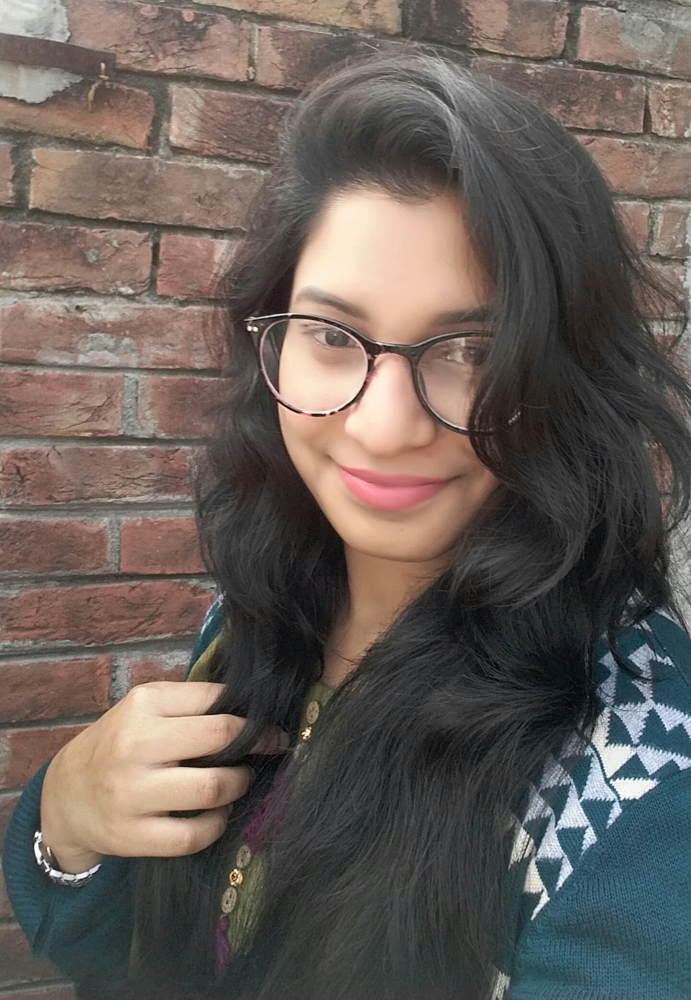

|
Welcome, I'm Aditi Karmakar. I'm studing at Southeast University department of Computer Science & Enginnering. I am mainly a web developer from Dhaka, Bangladesh and I love to do it.
I am a hard-worikng person.copy from hereAbout.me (Usually styled as about.me) is a personal web hosting service co-founded by Ryan Freitas, Tony Conrad and Tim Young in October 2009.[1] The site offers registered users a simple platform from which to link multiple online identities, relevant external sites, and popular social networking websites such as Facebook, Flickr, Google+, Pinterest, LinkedIn, Twitter, Tumblr, and YouTube. It is characterized by its one-page user profiles, each with a large, often-artistic background image and abbreviated biography.
|

Fig: Aditi Karmakar
|